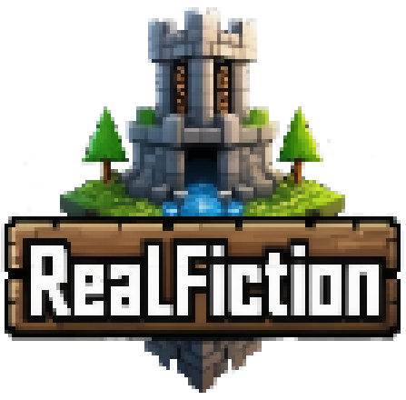

There are 0 players online on RealFiction
realfiction.live
Bedrock: bedrock.realfiction.live - Port: 19132 (Default)
Our Story
Founded in late 2018, RealFiction was created by LittleNicholas and EyeSauce39, and began as a factions server for their friends to play on. The original RealFiction focused on Factions gamemode, but had other gamemodes like Bedwars, and RF originals such as, Vault and Tournaments. RealFiction had many ups and downs throughout the years, but was officially revamped as an SMP with a brand new Survival world, new spawn, and new gamemodes. What makes RealFiction unique is our inclusivity and community-centric mindset that still stands firmly against Pay-To-Win game style, or staff toxicity.